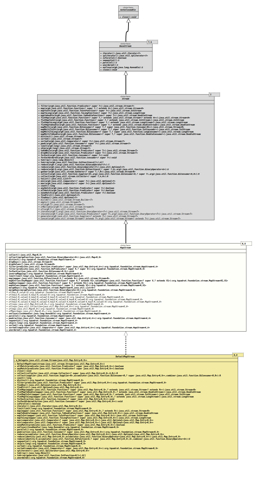

- Type Parameters:
K- The type of the map keys.V- The type of the map values.
- All Superinterfaces:
AutoCloseable,BaseStream<Map.Entry<K,,V>, Stream<Map.Entry<K, V>>> Stream<Map.Entry<K,V>>
- All Known Implementing Classes:
DefaultMapStream
@ClassVersion(sourceVersion="$Id: MapStream.java 1031 2022-04-07 22:43:02Z tquadrat $")
@API(status=STABLE,
since="0.0.7")
public interface MapStream<K,V>
extends Stream<Map.Entry<K,V>>
A stream of
Map.Entry<K,V>.- Author:
- Alexis Cartier (alexcrt)
- Modified by:
- Thomas Thrien (thomas.thrien@tquadrat.org)
- Version:
- $Id: MapStream.java 1031 2022-04-07 22:43:02Z tquadrat $
- Since:
- 0.0.7
- UML Diagram
-

UML Diagram for "org.tquadrat.foundation.stream.MapStream"
{kind=link}
-
Nested Class Summary
Nested classes/interfaces inherited from interface java.util.stream.Stream
Stream.Builder<T extends Object> -
Method Summary
Modifier and TypeMethodDescriptioncollect()Returns aMapfrom the stream.collect(BinaryOperator<V> mergeFunction) Returns aMapfrom the stream.distinct()dropKeys()Returns a stream consisting only of the values of underlying map for thisMapStream.
This is an intermediate operation.Returns a stream consisting only of the keys of underlying map for thisMapStream.
This is an intermediate operation.filter(BiPredicate<? super K, ? super V> predicate) Returns a stream consisting of the elements of this stream that match the given predicate.
This is an intermediate operation.default voidforEach(BiConsumer<K, V> action) Performs an action for each entry of theMapthat was used to construct this stream.
This is a terminal operation.
The behaviour of this operation is explicitly nondeterministic.Returns aMapStreamfrom which the key and values are reversed.limit(long n) default <R> Stream<R>map(BiFunction<K, V, ? extends R> mapper) Returns a stream consisting of the results of applying the given function to the elements of this stream.
This is an intermediate operation.default <K1,V1> MapStream<K1, V1> mapEntries(Function<? super K, ? extends K1> keyMapper, Function<? super V, ? extends V1> valueMapper) Applies the mapping for each key and value in the map.Applies the mapping for each key in the map.Applies the mapping for each value in the map.Merges the keys of the stream into a new stream.mergeKeys(BinaryOperator<V> mergeFunction) Merges keys of the stream into a new stream with the provided merge function.static <K,V> MapStream<K, V> of(Collection<Map.Entry<K, V>> nvps) Factory for aMapStream<K,V>; constructs a stream from aCollectionof key-value pairsstatic <K,V> MapStream<K, V> Factory for aMapStream<K,V>; constructs a stream from some key-value pairsstatic <K,V> MapStream<K, V> Factory for aMapStream<K,V>; constructs a stream from an instance ofMap.static <K,V> MapStream<K, V> of(K key, V value) Factory for aMapStream<K,V>; constructs a stream from a single key-value pair.static <K,V> MapStream<K, V> of(K key1, V value1, K key2, V value2) Factory for aMapStream<K,V>; constructs a stream from two key-value pairsstatic <K,V> MapStream<K, V> of(K key1, V value1, K key2, V value2, K key3, V value3) Factory for aMapStream<K,V>; constructs a stream from three key-value pairsstatic <K,V> MapStream<K, V> of(K key1, V value1, K key2, V value2, K key3, V value3, K key4, V value4) Factory for aMapStream<K,V>; constructs a stream from four key-value pairsstatic <K,V> MapStream<K, V> of(K key1, V value1, K key2, V value2, K key3, V value3, K key4, V value4, K key5, V value5) Factory for aMapStream<K,V>; constructs a stream from five key-value pairsstatic <K,V> MapStream<K, V> Factory for aMapStream<K,V>; constructs a stream from several instances ofMap.parallel()skip(long n) sorted()sorted(Comparator<? super Map.Entry<K, V>> comparator) Methods inherited from interface java.util.stream.BaseStream
close, isParallel, iterator, spliteratorMethods inherited from interface java.util.stream.Stream
allMatch, anyMatch, collect, collect, count, dropWhile, findAny, findFirst, flatMap, flatMapToDouble, flatMapToInt, flatMapToLong, forEach, forEachOrdered, map, mapMulti, mapMultiToDouble, mapMultiToInt, mapMultiToLong, mapToDouble, mapToInt, mapToLong, max, min, noneMatch, reduce, reduce, reduce, takeWhile, toArray, toArray, toList
-
Method Details
-
collect
Returns aMapfrom the stream. If there are identical keys in the stream,mergeKeys()should be called before. Alternatively,collect(BinaryOperator)could be used.- Returns:
- A map from the values of the stream.
-
collect
Returns aMapfrom the stream. If there are similar keys in the stream, the merge function will be applied to merge the values of those keys.- Parameters:
mergeFunction- The function that is used to merge the values with identical keys.- Returns:
- A map from the values of the stream.
-
distinct
-
dropKeys
Returns a stream consisting only of the values of underlying map for thisMapStream.
This is an intermediate operation.- Returns:
- The new stream.
-
dropValues
Returns a stream consisting only of the keys of underlying map for thisMapStream.
This is an intermediate operation.- Returns:
- The new stream.
-
filter
-
filter
Returns a stream consisting of the elements of this stream that match the given predicate.
This is an intermediate operation.- Parameters:
predicate- A non-interfering, stateless predicate to apply to each element to determine if it should be included.- Returns:
- The new stream.
- See Also:
-
forEach
Performs an action for each entry of theMapthat was used to construct this stream.
This is a terminal operation.
The behaviour of this operation is explicitly nondeterministic. For parallel stream pipelines, this operation does not guarantee to respect the encounter order of the stream, as doing so would sacrifice the benefit of parallelism. For any given element, the action may be performed at whatever time and in whatever thread the library chooses. If the action accesses shared state, it is responsible for providing the required synchronisation.- Parameters:
action- A non-interfering action to perform on the entries.
-
inverseMapping
Returns aMapStreamfrom which the key and values are reversed.- Returns:
- A new map stream.
-
limit
-
map
Returns a stream consisting of the results of applying the given function to the elements of this stream.
This is an intermediate operation.- Type Parameters:
R- The element type of the new stream.- Parameters:
mapper- A non-interfering, stateless function to apply to each element.- Returns:
- The new stream.
-
mapEntries
default <K1,V1> MapStream<K1,V1> mapEntries(Function<? super K, ? extends K1> keyMapper, Function<? super V, ? extends V1> valueMapper) Applies the mapping for each key and value in the map.
If the mapping function is not bijective for the keys,
mergeKeys()ormergeKeys(BinaryOperator)needs to be called before, or a merge function has to be provided when callingcollect().- Type Parameters:
K1- The type of the map keys.V1- The type of the map values.- Parameters:
keyMapper- The key mapping to be applied.valueMapper- The value mapping to be applied.- Returns:
- A new map stream.
-
mapKeys
Applies the mapping for each key in the map. If the mapping function is not bijective,mergeKeys()ormergeKeys(BinaryOperator)needs to be called before, or a merge function has to be provided when callingcollect().- Type Parameters:
K1- The type of the map keys.- Parameters:
mapper- The key mapping to be applied.- Returns:
- A new map stream.
-
mapValues
Applies the mapping for each value in the map.- Type Parameters:
V1- The type of the map values.- Parameters:
mapper- The value mapping to be applied.- Returns:
- A new map stream.
-
mergeKeys
Merges the keys of the stream into a new stream.- Returns:
- A new map stream.
-
mergeKeys
Merges keys of the stream into a new stream with the provided merge function.- Parameters:
mergeFunction- The merge function.- Returns:
- A new map stream.
-
of
Factory for aMapStream<K,V>; constructs a stream from a single key-value pair.- Type Parameters:
K- The type of the map keys.V- The type of the map values.- Parameters:
key- The key.value- The value.- Returns:
- A new
MapStream<K,V>.
-
of
@API(status=STABLE, since="0.0.4") static <K,V> MapStream<K,V> of(K key1, V value1, K key2, V value2) Factory for aMapStream<K,V>; constructs a stream from two key-value pairs- Type Parameters:
K- The type of the map keys.V- The type of the map values.- Parameters:
key1- The first key.value1- The first value.key2- The second key.value2- The second value.- Returns:
- A new
MapStream<K,V>.
-
of
@API(status=STABLE, since="0.0.4") static <K,V> MapStream<K,V> of(K key1, V value1, K key2, V value2, K key3, V value3) Factory for aMapStream<K,V>; constructs a stream from three key-value pairs- Type Parameters:
K- The type of the map keys.V- The type of the map values.- Parameters:
key1- The first key.value1- The first value.key2- The second key.value2- The second value.key3- The third key.value3- The third value.- Returns:
- A new
MapStream<K,V>.
-
of
@API(status=STABLE, since="0.0.4") static <K,V> MapStream<K,V> of(K key1, V value1, K key2, V value2, K key3, V value3, K key4, V value4) Factory for aMapStream<K,V>; constructs a stream from four key-value pairs- Type Parameters:
K- The type of the map keys.V- The type of the map values.- Parameters:
key1- The first key.value1- The first value.key2- The second key.value2- The second value.key3- The third key.value3- The third value.key4- The third key.value4- The third value.- Returns:
- A new
MapStream<K,V>.
-
of
@API(status=STABLE, since="0.0.4") static <K,V> MapStream<K,V> of(K key1, V value1, K key2, V value2, K key3, V value3, K key4, V value4, K key5, V value5) Factory for aMapStream<K,V>; constructs a stream from five key-value pairs- Type Parameters:
K- The type of the map keys.V- The type of the map values.- Parameters:
key1- The first key.value1- The first value.key2- The second key.value2- The second value.key3- The third key.value3- The third value.key4- The third key.value4- The third value.key5- The third key.value5- The third value.- Returns:
- A new
MapStream<K,V>.
-
of
@API(status=STABLE, since="0.0.4") @SafeVarargs static <K,V> MapStream<K,V> of(Map.Entry<K, V>... nvps) Factory for aMapStream<K,V>; constructs a stream from some key-value pairs- Type Parameters:
K- The type of the map keys.V- The type of the map values.- Parameters:
nvps- The key-value-pairs.- Returns:
- A new
MapStream<K,V>.
-
of
Factory for aMapStream<K,V>; constructs a stream from aCollectionof key-value pairs- Type Parameters:
K- The type of the map keys.V- The type of the map values.- Parameters:
nvps- The key-value-pairs.- Returns:
- A new
MapStream<K,V>.
-
of
Factory for aMapStream<K,V>; constructs a stream from an instance ofMap.- Type Parameters:
K- The type of the map keys.V- The type of the map values.- Parameters:
map- The map to build the stream from.- Returns:
- A new
MapStream<K,V>.
-
ofMaps
@API(status=STABLE, since="0.0.4") @SafeVarargs static <K,V> MapStream<K,V> ofMaps(Map<K, V>... maps) Factory for aMapStream<K,V>; constructs a stream from several instances ofMap.- Type Parameters:
K- The type of the map keys.V- The type of the map values.- Parameters:
maps- The maps to build the stream from.- Returns:
- A new
MapStream<K,V>.
-
onClose
- Specified by:
onClosein interfaceBaseStream<K,V>
-
parallel
- Specified by:
parallelin interfaceBaseStream<K,V>
-
peek
-
sequential
MapStream<K,V> sequential()- Specified by:
sequentialin interfaceBaseStream<K,V>
-
skip
-
sorted
-
sorted
-
unordered
- Specified by:
unorderedin interfaceBaseStream<K,V>
-